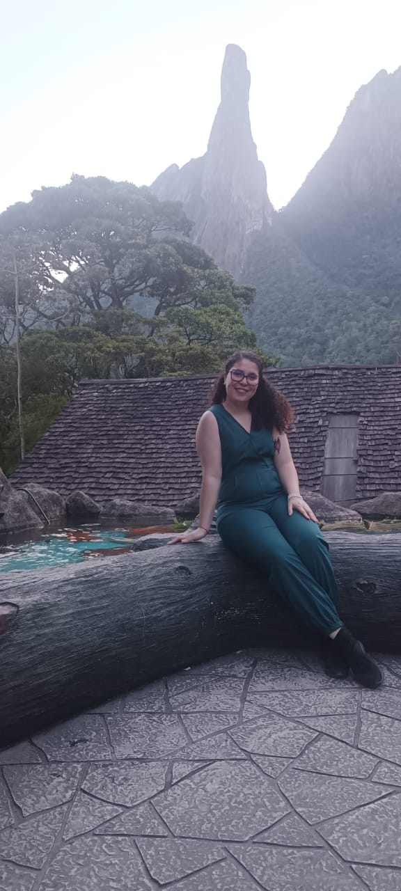

Nosso futuro está diretamente ligado à saúde dos oceanos. Cada pequena ação conta para preservar a biodiversidade marinha e garantir um mundo mais limpo e sustentável para as próximas gerações.
A poluição marinha consiste na introdução voluntária ou involuntária de substâncias físicas, químicas ou biológicas no ambiente marinho, comprometendo a qualidade da água dos oceanos e afetando negativamente os ecossistemas aquáticos e a saúde humana. Trata-se de um grave problema ambiental amplamente causado pela ação antrópica.
As principais fontes de poluição incluem o descarte irregular de lixo, o lançamento de efluentes urbanos, industriais, derramamentos de petróleo, e resíduos gerados por atividades econômicas diversas. Estima-se que aproximadamente 80% da poluição marinha tenha origem terrestre, sendo transportada aos oceanos por meio de rios, esgotos e redes pluviais.
Os impactos do acúmulo de lixo no mar são diversos:
O oceano desempenha um papel fundamental na mitigação das mudanças climáticas, atuando como um gigantesco reservatório de calor e carbono. Ele absorve mais de 90% do calor extra gerado pelo aumento dos gases de efeito estufa na atmosfera, além de absorver cerca de um quarto das emissões anuais de CO₂ da humanidade. Sem essa capacidade de absorção, o aquecimento global seria muito mais rápido e severo.
Além disso, as correntes oceânicas atuam como um sistema de transporte global, movendo a água quente das regiões tropicais para os polos e a água fria de volta. Esse processo, conhecido como circulação termohalina, distribui o calor ao redor do planeta e influencia diretamente os padrões climáticos regionais, como as chuvas e a temperatura do ar.
No entanto, grande parte dessa função vital está sendo comprometida pela poluição causada pelas atividades humanas, principalmente pela emissão de gases de efeito estufa e pelo acúmulo de resíduos que chegam ao mar. Quando o oceano sofre com a poluição, ele perde sua capacidade natural de equilíbrio e acaba devolvendo consequências para o clima global. Ou seja, a poluição afeta o mar, e o mar, por sua vez, afeta o clima.
Por consequência, a crescente quantidade de calor e CO₂ está causando mudanças profundas e alarmantes como:
O ato de consumir faz parte do nosso dia a dia. Compramos roupas, alimentos, eletrônicos e uma infinidade de produtos e serviços. No entanto, raramente paramos para pensar no impacto que essas escolhas têm no meio ambiente, na economia e na sociedade. O consumo desenfreado tem se mostrado um dos maiores desafios do século XXI, gerando esgotamento de recursos naturais, aumento da poluição e desigualdades sociais.
Nesse contexto, surge o conceito de consumo consciente, que nada mais é do que a prática de fazer escolhas de compra que consideram os impactos sociais, ambientais e econômicos de cada produto ou serviço. É um movimento que busca reduzir o nosso impacto negativo no planeta e promover um estilo de vida mais equilibrado. Ao adotar o consumo consciente, você se torna um agente de mudança, impulsionando empresas a adotarem práticas mais sustentáveis e éticas.
O consumo consciente se baseia em alguns princípios fundamentais que podem guiar nossas escolhas:
A poluição marinha é um dos maiores desafios do nosso tempo. Sacolas, garrafas e outros resíduos, quando chegam ao mar, colocam em risco a vida de tartarugas, peixes, aves e até de nós mesmos. Por isso, é tão importante aprender e ensinar desde cedo como cuidar do planeta.
Pensando nisso, criamos um jogo da memória! Assim as crianças entendem que pequenas atitudes, como descartar o lixo corretamente, podem proteger os oceanos e garantir um futuro mais saudável.
Conscientizar desde a infância é fundamental, porque as crianças de hoje serão os adultos de amanhã. E quanto mais cedo aprendermos a cuidar do meio ambiente, maiores serão as chances de transformar o mundo em um lugar melhor para todos.
Combine os pares de cartas para proteger a vida marinha.
Parabéns! Você completou o jogo e ajudou a proteger os oceanos!
Estudante de Análise e Desenvolvimento de Sistemas, apaixonada por desenvolvimento web e novas tecnologias. Adora entender como as coisas funcionam por trás das telas.

Técnica de Suporte em TI, acredita que a tecnologia deve servir às pessoas. Reconhecida pela empatia e gentileza, busca crescer na carreira levando mais calor ao mundo digital.
Mineira em São Paulo, dentista há 13 anos e em transição para a área de Tecnologia. Apaixonada por Front-End, onde une criatividade e inovação.
As imagens utilizadas no site foram obtidas no Unsplash.
Os vídeos exibidos nas seções foram gerados a partir das imagens, utilizando a ferramenta Veo 3 do Gemini.